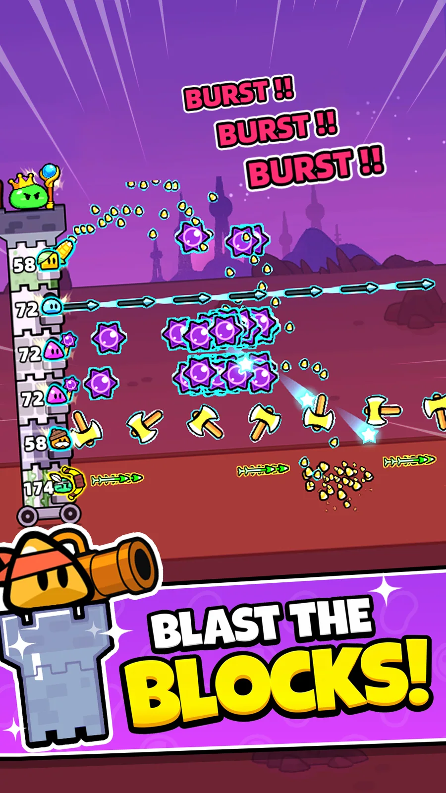
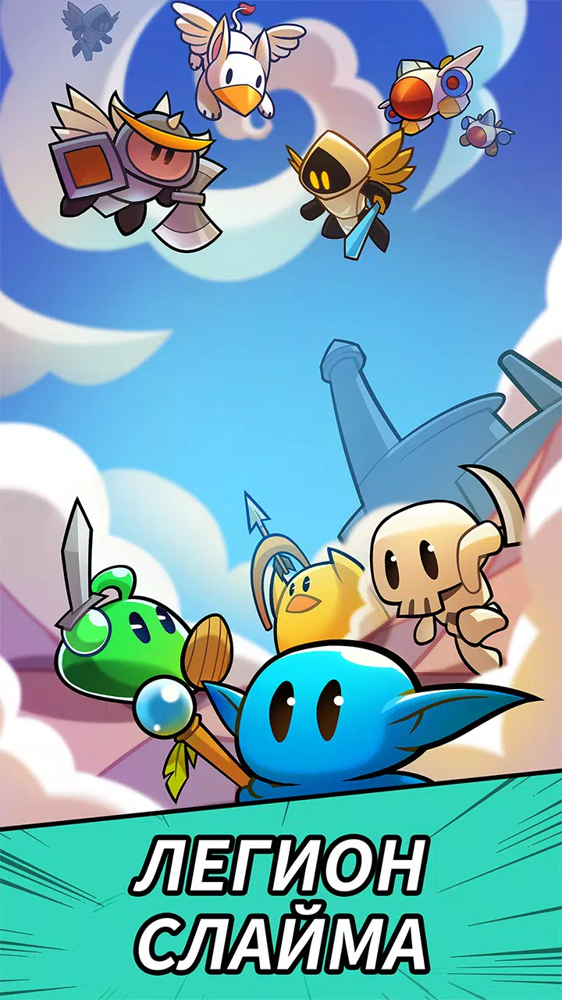
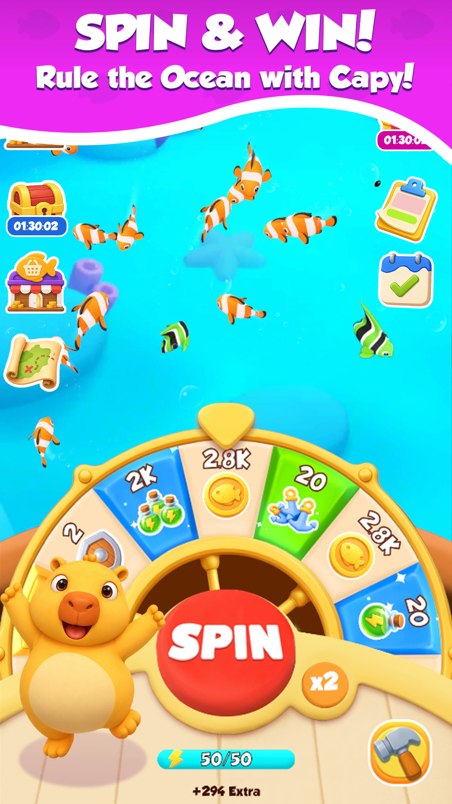
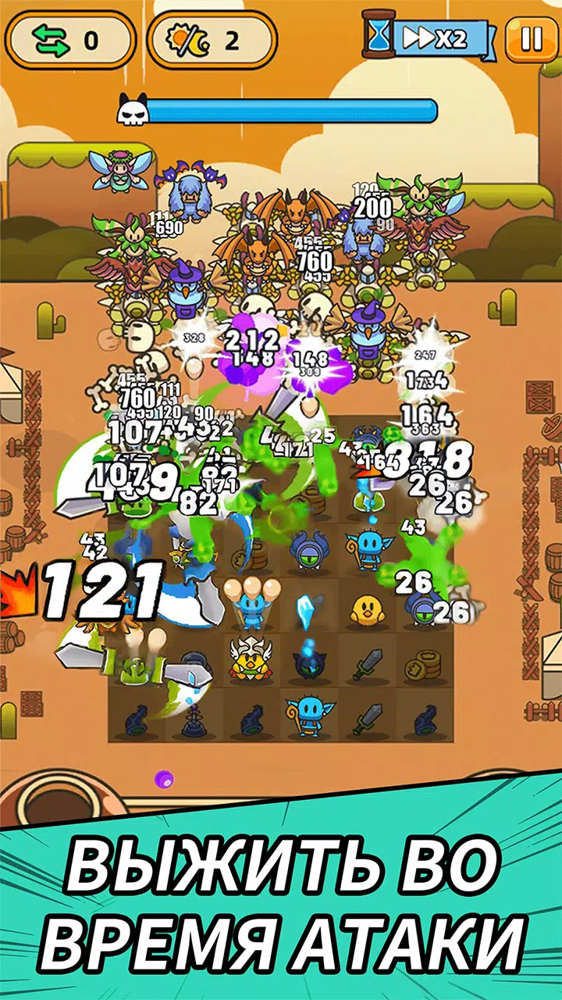

把核心循环做成可测试产品
先定义这一版必须回答的产品问题，再删减与验证无关的内容，让团队更快完成可体验、可测试的版本。
11 年游戏研发0→1 制作经济与商业化
我从战斗与经济数值起步，做过主策划，也独立带过 10 人团队从立项走到首测。我的工作，是把“感觉有机会”拆成能验证的问题，再让玩法、商业化和交付共用一条时间线。



当玩法和商业目标已经出现雏形，我会先统一核心循环、目标用户与首测标准，再拆出关键假设、里程碑和继续投入条件，让团队每一步都围绕可交付、可衡量的结果推进。
先定义这一版必须回答的产品问题，再删减与验证无关的内容，让团队更快完成可体验、可测试的版本。
把首日理解成本、关卡节奏、养成目标和广告点位放进同一个循环，让规模增长建立在留存与回收都能承接的基础上。
先算清资源产销与强弱关系，再用局部重构和新增内容打开新的成长空间，保留有效框架，同时提升产品上限。
每份案例都写清我的职责、关键取舍、具体动作与交付结果，并区分个人贡献和团队成绩。
海外休闲 · 制作人 · 0→1 至首测
一个“转盘+捕鱼”的组合，怎样在 10 人团队和有限预算内成为可测试产品？

6 周可演示 Demo / 首测包输出阶段消耗约 100 万国内小游戏 · 主策划 · 立项至上线
当新增开始放大，怎样让关卡、养成和广告节奏同时承担留存与回收？
 次留 35% / IAA ARPU ¥1.2
次留 35% / IAA ARPU ¥1.2
海外长线运营 · 主策划 · 存量调优
怎样保留成熟框架，用局部重构打开新的增长空间？

AppMagic 2024.05–2024.12两款亿级流水产品给了我经济、成长和广告结构的基础；后来的海外原型与国内小游戏，让我学会如何更早判断一条玩法是否值得继续。
参与立项与系统框架，主导核心关卡节奏、塔防养成线和非线性难度。关卡节奏对次留、七留和广告次数的影响，是这款产品最重要的数据体会。
负责掩体射击的经济与成长架构、技能与角色成长深度，并参与关卡和付费设计。它让我理解：短期传播优势不能替代长线商业模型。
从 SLG、战棋与战斗数值，到休闲原型、海外长线、国内小游戏和 0→1 带队。岗位在变，判断方式始终围绕资源、节奏、风险和验证。
立项阶段先定义哪些信息会影响继续投入，再用视频、原型或小规模测试取得足够证据。每笔投入都对应一个明确的决策节点。
这一阶段到底要验证吸量、理解、留存还是回收？什么数据出现时必须停止？
视频素材、可玩原型、小规模买量或存量数据诊断。能用 1 周回答的问题，不先投入 1 个月制作。
难度、资源消耗、成长目标和广告节奏同步设计，避免上线后再用活动补贴产品结构。
版本、商店、支付、归因和数据分析都进入同一套验收标准，结果无论成败都留下可复用结论。
“按计划交付”证明执行。
“用数据说清下一步”才体现制作人的判断。
脑图转系统文档、配置联动检查、公式与逻辑验证、资源候选生成。它减少重复劳动，但最终取舍仍由团队对玩法与数据的判断负责。
这条路径让我既能进入具体公式和配置，也能跳出单点功能，判断一个版本是否值得继续投入。
多益网络、麦驰网络：SLG 与战棋项目的战斗、经济及全部数值设计。
余香科技：两款亿级流水休闲产品，以及十余款海外原型的立项、系统和商业化。
孚谦科技：二合、拼图塔防、肉鸽原型，以及《合合合英雄》的存量数值重构。
掌游天下与卓瀚科技：国内小游戏规模化、海外休闲 0→1、发行基建与团队交付。
成都，可到岗。期望参与需要产品判断、商业结构与跨职能交付的团队。
休闲游戏制作人 / 主策划 · 成都
可提供完整案例过程、测试报告、数值模型与系统文档。